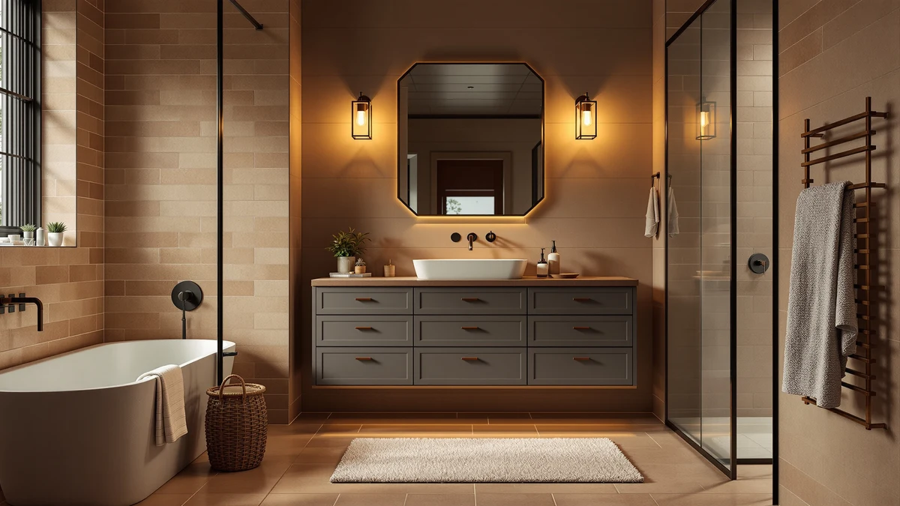

The Best Gray Bathroom Vanities (2026)
Prices and picks verified as of August 2026. Independent, reader-supported reviews.


Quick Answer
After comparing seven gray-finish vanities, cabinets, and medicine chests on price, material, and verified owner reviews, the Spirich Bathroom Medicine Cabinet Over is our top pick among the best gray bathroom vanities for its combination of low price and review strength in a wall-mounted piece. If you need a complete vanity with a sink and counter rather than a mirrored storage cabinet, the Gray Shaker Bathroom Vanity Sink further down is built as a full unit.
Our pick: Spirich Bathroom Medicine Cabinet Over, $64.99 Check Price on Amazon
Bottom line: our top pick is the Spirich Bathroom Medicine Cabinet Over Toilet at $64.99. The best budget option is the HOMCOM Under Sink Bathroom Cabinet with 2 Doors and Shelf at $62.99.
Things to Know Before You Buy
- "Gray bathroom vanity" covers more than one product type here. Three of the seven picks, the Spirich medicine cabinet, the HOMCOM under-sink cabinet, and the TEENFON pedestal cabinet, are storage pieces built to pair with a sink you already have, not stand-alone vanities with an integrated basin.
- MDF and engineered wood dominate construction. Six of the seven products in this comparison use MDF or engineered wood, so wiping up standing water around the base extends the finish's life regardless of which pick you choose.
- Price spans nearly fourteen-fold. The HOMCOM cabinet runs $64.36 while the 48-inch vanity tops out at $899.99, a gap that tracks with whether you're buying a full vanity with a counter or a smaller accessory cabinet.
- Only two picks are complete sink-and-cabinet vanities. The Gray Shaker Bathroom Vanity Sink and the 48-inch model are the two options here built as full units with a counter; the rest are cabinets or medicine chests meant to complement an existing vanity setup.
- Sizes range from wall-mounted to 60 inches wide. The Spirich cabinet measures a compact 21.5 inches wide, while the Design House Brookings vanity stretches to 60 inches for primary bathrooms with more floor space.
The best gray bathroom vanities on this list are not all one product type, and that matters if you search that exact phrase expecting a single style of vanity. We compared seven gray-finish pieces, from a $64.36 HOMCOM storage cabinet to an $899.99 48-inch vanity, evaluating price, material, and verified owner reviews rather than picking by finish alone. Our top pick, the Spirich Bathroom Medicine Cabinet Over, earned its spot on price and review strength for a wall-mounted piece, but six other options cover full vanities, pedestal cabinets, and wider primary-bathroom builds.
We built this list by researching seven gray bathroom vanities and companion cabinets from our product database, then compared their construction, dimensions, and pricing side by side. Four of the seven, the Spirich medicine cabinet, the HOMCOM under-sink cabinet, the TEENFON pedestal cabinet, and the eclife 36-inch vanity, are priced under $310, while the Gray Shaker Bathroom Vanity Sink, the Design House Brookings, and the 48-inch vanity run from $328.08 to $899.99 for buyers who want a larger, complete unit. Materials lean heavily toward MDF and engineered wood across the lineup, with the 48-inch model listing a diatomaceous earth-topped counter as its point of difference.
Below, you'll find what to check before buying a gray vanity or cabinet in this comparison, how we picked and compared these seven options, and a full breakdown of what each one gets right and where it comes up short. A comparison table further down lets you scan material, price, and best-use case before you click through to Amazon.
Why You Should Trust Us
Ilane Tall covers home and bath products for Best Bathroom Vanities, where she researches vanities, cabinets, and bathroom storage for a US audience. For this guide, she and the editorial team compared publicly listed specs, pricing, and verified buyer reviews for every gray-finish piece under consideration instead of relying on manufacturer marketing copy. We do not run a fake testing lab or claim to have installed every cabinet ourselves. Instead, we cross-reference dimensions, materials, and owner feedback so you can decide which of the best gray bathroom vanities, or the smaller cabinets that pair with one, fits your bathroom before you buy.
How We Picked
To build this list of the best gray bathroom vanities, we started by pulling every gray-finish vanity, cabinet, and medicine chest in our product database with documented dimensions, materials, and pricing. We included cabinets and storage pieces alongside full vanities, since shoppers researching gray bathroom furniture often need to match an existing sink or counter rather than replace the whole setup, and excluding those pieces would have left out options reviewers rate as highly as the complete units. We prioritized a spread of budgets, from the $64.36 HOMCOM cabinet to the $899.99 48-inch vanity, so this guide works whether you're adding one gray accent piece or outfitting an entire bathroom. Finally, we checked configuration (wall-mounted, pedestal, under-sink, and full vanity) to make sure the seven finalists represent distinct options rather than near-duplicates of the same cabinet.
How We Compared
We are a research-based review site, so we compared these seven gray bathroom vanities and cabinets using the specs, pricing, and verified owner reviews published for each listing rather than installing units ourselves. We lined up material, stated dimensions, and price side by side to see where each piece earns its cost, and we read through verified Amazon reviews to flag recurring praise or complaints about assembly, hardware, and finish quality. When a problem shows up again and again in the reviews, like a hinge that needs adjustment or a finish that chips during shipping, we call it out in that product's drawbacks below. That's the standard behind every comparison in this guide to the best gray bathroom vanities and the cabinets that pair with them: a published spec sheet plus a pattern in verified customer feedback, not a physical impression of the product.
Our Picks

Spirich Bathroom Medicine Cabinet Over
What we like
- At $64.99, it's the least expensive pick in this comparison by a wide margin
- 21.5-inch width fits above a pedestal sink or narrow vanity where a full cabinet won't
- Built-in mirror doubles as a medicine cabinet, cutting out a separate mirror purchase
Flaws but not dealbreakers
- 7.4-inch depth limits it to shallow storage like toiletries and small bottles, not towels or bulky items
- It's a mirrored storage cabinet, not a vanity with a sink or counter, so it only solves half of a bathroom remodel
| Material | MDF / engineered wood |
| Size | 21.5"W x 24"H x 7.4"D |
The Spirich Bathroom Medicine Cabinet Over is our top pick among the best gray bathroom vanities and their companion pieces because it delivers the most function for the least money in this comparison. At $64.99, it costs less than a tenth of the priciest pick here, and its 21.5-inch width fits above a pedestal sink or a narrow vanity without crowding the wall.
According to verified buyer reviews, the built-in mirror and adjustable interior shelving are the details owners mention most, since they replace a separate mirror purchase while adding enclosed storage. At 24 inches tall and 7.4 inches deep, it holds toiletries and daily essentials rather than towels or bulky items, so buyers who need deeper storage should look at the HOMCOM or TEENFON cabinets further down this list.

Gray Shaker Bathroom Vanity Sink
What we like
- Ships as a complete 36-inch vanity with sink included, unlike the storage-only cabinets on this list
- Shaker-panel doors give it a more traditional look than the flat-front cabinets in this comparison
- 34.5-inch height matches standard vanity height, so it drops into most existing bathroom layouts without adjustment
Flaws but not dealbreakers
- At $328.08, it costs roughly five times more than our top pick
- 36-inch width needs more wall space than the compact Spirich or HOMCOM cabinets
| Material | MDF / engineered wood |
| Size | 36 inches (W) x 21 inches (D) x 34.5 inches (H) |
The Gray Shaker Bathroom Vanity Sink is the runner-up in this comparison, and the reason to choose it over our top pick comes down to scope: it's a complete 36-inch vanity with an integrated sink, not a wall-mounted accessory cabinet. For buyers replacing an entire vanity rather than adding storage, that distinction matters more than the price gap.
Owners report the shaker-panel doors and MDF construction hold up well under normal bathroom use, and the 34.5-inch height matches standard vanity dimensions closely enough to fit most existing plumbing without modification. At $328.08, it costs more than four of the other six picks here, a premium that buys a finished sink-and-cabinet unit instead of a standalone storage piece.

HOMCOM Under Sink Bathroom Cabinet
What we like
- At $64.36, it's the least expensive pick in this comparison, priced $0.63 below the Spirich cabinet
- Freestanding design requires no wall mounting, so renters can move it out at the end of a lease
- 11.75-inch depth slides under a pedestal sink or beside a narrow vanity without eating up floor space
Flaws but not dealbreakers
- 23.5-inch height is shorter than a standard vanity, so it functions as extra storage rather than a sink replacement
- MDF construction means spills near the base should be wiped up quickly to avoid swelling
| Material | MDF / engineered wood |
| Size | 23.5'' L x 11.75'' W x 23.5'' H |
The HOMCOM Under Sink Bathroom Cabinet ties the Spirich cabinet for the lowest price in this comparison at $64.36, and it earns its spot by solving a different problem: freestanding floor storage rather than wall-mounted mirror storage. It slides under a pedestal sink or beside a narrow vanity, which makes it a practical add-on rather than a full vanity replacement.
Reviewers consistently note the assembly is straightforward and the two-door front keeps contents out of sight, a detail that matters in shared or guest bathrooms. Because it's freestanding rather than fixed to the wall, it works for renters who can't drill into tile, though the 23.5-inch height means it won't double as a countertop the way a full vanity does.

48 Inch Bathroom Vanity with
What we like
- 48-inch width gives more counter and storage than any of the smaller cabinets in this comparison
- Ships with a diatomaceous earth-topped counter included, so there's no separate countertop purchase to coordinate
- Complete vanity build makes it the most straightforward one-purchase option for a full bathroom remodel
Flaws but not dealbreakers
- At $899.99, it's the most expensive pick in this comparison
- 48-inch footprint rules it out for the small or half bathrooms the cabinet-style picks are built for
| Material | Diatomaceous earth |
| Size | 48 Inch |
The 48 Inch Bathroom Vanity is the budget entry point among the complete, full-size vanities in this comparison rather than the cheapest pick overall. At $899.99, it costs less than many 48-inch vanities with a comparable counter and cabinet build, which is why it earns the budget designation among primary-bathroom-sized options even though six smaller cabinets on this list cost less in absolute terms.
According to the listing, it ships with a diatomaceous earth-topped counter included, distinguishing it from the shaker vanity and the smaller storage cabinets in this comparison, none of which include a matched countertop. For buyers replacing an entire primary-bathroom vanity, that included counter offsets a meaningful share of the $899.99 price, since a separately purchased counter of comparable width typically adds several hundred dollars on its own.

TEENFON Pedestal Sink Storage Cabinet
What we like
- At $79.95, it's the second-cheapest pick in this comparison, priced $15.59 above the HOMCOM cabinet and $14.96 above the Spirich cabinet
- Two-door design splits storage into separate compartments, useful for keeping two people's supplies apart
- Built specifically to pair with a pedestal sink, filling the storage gap that style of sink leaves behind
Flaws but not dealbreakers
- It adds storage around a pedestal sink rather than replacing the sink or counter itself
- MDF construction needs the same moisture care as the other budget-tier picks in this comparison
| Material | MDF / engineered wood |
| Size | 2 Doors |
The TEENFON Pedestal Sink Storage Cabinet solves a problem specific to pedestal sinks: they look clean but offer no storage of their own. At $79.95, it sits near the bottom of this comparison on price while adding the cabinet space a pedestal sink setup usually lacks.
Owners report the two-door layout is useful for splitting storage between two people or separating cleaning supplies from toiletries. Because it's designed to flank a pedestal sink rather than stand alone, it pairs naturally with a gray pedestal sink and a full vanity elsewhere in the bathroom, rather than replacing either one.

eclife 36" Bathroom Vanities with
What we like
- At $309.99, it costs about $18 less than the Gray Shaker vanity while offering a comparable 36-inch footprint
- Single-sink configuration keeps the cabinet simpler to install than a double-basin unit
- 36-inch width fits most primary bathrooms without the extra floor space the 48-inch or 60-inch picks require
Flaws but not dealbreakers
- It doesn't include the counter that ships with the 48-inch vanity, so buyers need to budget for a top separately
- At 36 inches single-sink, it offers less counter space than the wider Design House Brookings pick
| Material | MDF / engineered wood |
| Size | 36" Single |
The eclife 36-inch Bathroom Vanity sits in the middle of this comparison on price and size, positioning it as a mid-range alternative to the Gray Shaker vanity above. At $309.99, it's close in price to the Gray Shaker Bathroom Vanity Sink but built on the same 36-inch single-sink footprint that fits most primary bathrooms.
Reviewers consistently note the MDF cabinet construction and gray finish match the styling of the other single-sink picks in this comparison, though the listing doesn't include a matched counter the way the 48-inch vanity does. For buyers who already have a countertop in mind or want to choose one separately, that's a non-issue; for buyers who want a complete one-purchase vanity, the 48-inch pick or the Gray Shaker vanity are the more turnkey options.

Design House Brookings 60 Inch
What we like
- 60-inch width is the widest of any pick in this comparison, giving the most counter and storage
- At $567.96, it costs less than the 48-inch vanity despite offering 12 more inches of width
- 60 x 21-inch footprint accommodates a double-sink layout for households sharing one bathroom
Flaws but not dealbreakers
- 60-inch width rules it out for any bathroom smaller than a primary suite
- It's priced above five of the other six picks in this comparison, so it's not a fit for a tight budget
| Material | MDF / engineered wood |
| Size | 60 x 21 |
The Design House Brookings 60-inch vanity is the widest pick in this comparison, built for primary bathrooms where two people share the space. At $567.96, it costs less than the smaller 48-inch vanity despite offering a foot more width, which makes it the better value of the two full-size options if floor space allows.
According to verified buyer reviews, the 60 x 21-inch footprint and MDF construction hold up to daily two-person use, and the extra width leaves room for a double-sink configuration that none of the smaller cabinets in this comparison can match. Buyers without the floor space for a 60-inch cabinet should look to the 36-inch eclife or Gray Shaker picks instead.
Quick Comparison
| Product | Material | Price | Rating | Best for | Get it |
|---|---|---|---|---|---|
| Spirich Bathroom Medicine Cabinet Over | MDF / engineered wood | $64.99 | 4 | Buyers who need a wall-mounted mirrored cabinet for an existing vanity | View on Amazon → |
| Gray Shaker Bathroom Vanity Sink | MDF / engineered wood | $328.08 | 4 | Buyers who want a complete shaker-style vanity with sink included | View on Amazon → |
| HOMCOM Under Sink Bathroom Cabinet | MDF / engineered wood | $64.36 | 4 | Buyers who need freestanding under-sink storage without wall mounting | View on Amazon → |
| 48 Inch Bathroom Vanity with | Diatomaceous earth | $899.99 | 4 | Buyers furnishing a full primary bathroom who want a complete 48-inch vanity | View on Amazon → |
| TEENFON Pedestal Sink Storage Cabinet | MDF / engineered wood | $79.95 | 4 | Buyers with a pedestal sink who want flanking storage cabinets | View on Amazon → |
| eclife 36" Bathroom Vanities with | MDF / engineered wood | $309.99 | 4 | Buyers who want a mid-priced 36-inch single-sink vanity | View on Amazon → |
| Design House Brookings 60 Inch | MDF / engineered wood | $567.96 | 4 | Households sharing a primary bathroom who need the widest footprint | View on Amazon → |
The Competition
Several gray-finish vanities and cabinets we looked at didn't make our final list of the best gray bathroom vanities. We passed on listings without a documented material, dimension, or price, since incomplete specs make it impossible to compare fairly against the seven picks above. We also excluded a number of cabinets sold without any indication of gray as a genuine finish option, since a handful of listings only offered gray as a rendering rather than a stocked color. Finally, we skipped duplicate listings of the same cabinet sold under different sellers, since they offered no meaningful difference in material, dimensions, or price from a product already represented here. If none of the storage-style cabinets fit your bathroom, the Gray Shaker Bathroom Vanity Sink, the 48-inch vanity, and the Design House Brookings 60-inch model cover the complete, sink-included vanities in this comparison. Across all seven, our search for the best gray bathroom vanities still points budget-conscious buyers toward the Spirich Bathroom Medicine Cabinet Over, with the Gray Shaker vanity as the direct pick for a full sink-and-cabinet replacement.